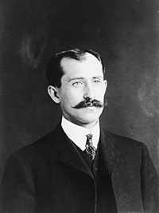
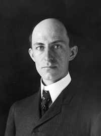
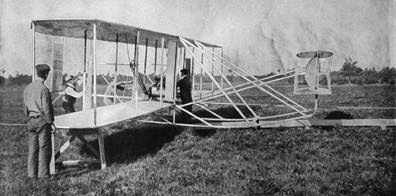

|
|
|
|
|
 |
 |
Lantaran hasil karya kedua bersaudara ini saling berkaitan satu sama lain, mereka tercantum berbarengan dalam daftar urutan buku ini dan ihwal keduanya pun akan dipaparkan dalam satu nafas. Wilbur Wright lahir tahun 1867 di kota Millville, Indiana. Orville Wright --adiknya-- lahir tahun 1871 di kota Dayton, Ohio. Kedua anak laki ini duduk di perguruan tinggi tetapi tak satu pun peroleh ijazah.
Keduanya punya bakat di bidang mekanika dan keduanya tertarik dengan masalah menerbangkan manusia ke udara. Di tahun 1892 mereka membuka toko, menjual, membetulkan, dan membikin sepeda. Usaha ini mendatangkan dana untuk melanjutkan niatnya: penyelidikan sektor aeronautik. Kakak-beradik ini asyik menekuni karya-karya peminat aeronautik lain seperti: Otto Lilienthal, Octave Chanute dan Samuel P. Langley. Di tahun 1899 mereka mulai bekerja ke arah penerbangan sendiri. Pada bulan Desember 1903, sesudah kerja keras selama empat tahun lebih sedikit, hasil usahanya berhasil dengan gemilang.
Orang mungkin heran kepada Wright bersaudara mampu menciptakan prestasi yang gagal dilakukan orang-orang lain. Ada beberapa sebab yang membuat mereka berhasil. Pertama, dua kepala tentu lebih efektif dari satu kepala. Wright bersaudara senantiasa bekerja sama dan tunjang-menunjang dengan amat serasi dan sempurna. Kedua, mereka dengan cekatan mengambil keputusan bahwa mereka pertama mempelajari bagaimana cara terbang sebelum mencoba membikin pesawat. Sepintas lalu hal ini rasanya bertentangan menurut ukuran umum: bagaimana bisa belajar terbang jika belum ada pesawat terbang? Jawabnya adalah, Wright bersaudara belajar terbang dengan menggunakan pesawat peluncur. Mula-mula mereka mengamati cara kerja layang-layang, kemudian peluncur. Tahun berikutnya mereka membawa pesawat peluncur ukuran besar ke Kitty Hawk, di Carolina Utara, cukup untuk ditumpangi dan dapat mengangkat seorang manusia. Pesawat ini dicoba. Tampaknya hasilnya tidak terlalu menggembirakan. Mereka bikin dan coba pesawat peluncur lengkap di tahun 1901 dan disusul dengan pembikinan tahun 1902. Pesawat peluncur ketiga ini merupakan gabungan dari pelbagai penemuan-penemuan penting mereka. Beberapa paten dasar, digunakan tahun 1903, berkaitan dengan pesawat peluncur itu ketimbang pesawat terbang pertama mereka. Mengenai pesawat peluncur ketiga itu mereka telah lebih dari seribu kali mengangkasa dengan berhasil. Kedua bersaudara Wright telah merupakan pilot pesawat peluncur terbaik dan paling berpengalaman di dunia sebelum mereka mulai membikin pesawat udara bermesin.
Pengalaman mengudara dengan pesawat peluncur merupakan inti sukses ketiga mereka yang amat penting. Banyak orang yang sebelumnya sudah pernah mencoba membikin pesawat punya kekhawatiran utama bagaimana hasil ciptaannya tinggal landas. Wright bersaudara dengan tepat menyadari bahwa masalah pokok adalah bagaimana mengawasi pesawat sesudah berada di udara. Karena itu, sebagian besar waktu dan perhatian mereka tumpahkan pada soal bagaimana mencapai kestabilan pesawat ketika sudah terbang. Mereka berhasil menciptakan tiga jenis alat pokok untuk mengawasi pesawat, dan inilah yang membuat mereka berhasil dalam peragaan.
Wright bersaudara juga memberi sumbangan penting dalam hal perancangan sayap. Mereka sadar, data-data sebelumnya yang sudah disiarkan, tidak bisa dijadikan pegangan. Karena itu mereka menciptakan sendiri lorong-lorong angin dan dicoba terhadap lebih dari dua ribu macam bentuk permukaan sayap. Inti utama dari percobaan ini adalah, kedua bersaudara itu mampu membikin bagan sendiri, memaparkan tentang tekanan udara terhadap sayap tergantung pada bentuk sayap itu. Keterangan ini kemudian digunakan dalam tiap pembuatan sayap pesawat terbang.
Disamping semua hasil penemuan mereka, kedua bersaudara Wright ini tak bakal bisa sukses berhasil bilamana mereka tidak tampil pada saat yang tepat dalam sejarah. Percobaan penggunaan penerbangan dengan mesin pada paruh pertama abad ke-19 jelas cenderung ke arah gagal. Mesin uap jelas terlampau berat untuk penggunaan penerbangan. Pada saat kedua bersaudara Wright muncul, mesin pemroses pembakaran sudah diketemukan orang. Tetapi, mesin ini hanya untuk pemakaian secara umum, terlalu berat untuk digunakan dalam penerbangan pesawat. Ketika tak ada satu pabrik pun yang sanggup merancang mesin yang cukup ringan, kedua bersaudara Wright (dengan bantuan seorang ahli mesin) merancang sendiri. Ini menunjukkan kegeniusan mereka karena walaupun dalam tempo relatif singkat toh mereka mampu merancang mesin yang lebih unggul dari hampir semua bikinan pabrik lain. Tambahan pula, Wright bersaudara merancang sendiri baling-baling. Salah satu yang mereka pergunakan di tahun 1903, 66% berhasil.

Pesawat Ganda Wright bersaudara yang asli
Penerbangan pertama dilakukan tanggal 17 Desember tahun 1903 di Kill Devil Hill dekat Kitty Hawk, Carolina Utara. Masing-masing kedua bersaudara itu melakukan dua penerbangan pada hari itu. Penerbangan pertama, yang dilakukan Orville Wright berlangsung 12 detik dan mencapai jarak 120 kaki. Penerbangan terakhir, yang dilakukan Wilbur Wright, berlangsung 59 detik dan mencapai ketinggian 852 kaki. Pesawatnya yang mereka namakan Flyer I (kini terkenal dengan julukan Kitty Hawk) memakan ongkos pembuatan kurang dari 1000 dolar. Pesawat itu punya sayap sepanjang 40 kaki dan bobot sekitar 750 pon, berkekuatan mesin 12 tenaga kuda dengan berat cuma 170 pon. Pesawat asli itu kini tersimpan rapi di Museum Udara dan Ruang Angkasa Washington D.C.
Kendati ada lima saksi mata tatkala penerbangan pertama, relatif sedikit sekali diberitakan oleh koran-koran pada terbitan keesokan harinya (dan itu pun umumnya kurang cermat). Surat kabar kotanya sendiri di Dayton Ohio samasekali menganggap sepi usaha ini. Baru lima tahun sesudah itu dunia umum sadar bahwa penerbangan manusia betul-betul sudah bisa terlaksana.
Setelah penerbangan mereka di Kitty Hawk, Wright bersaudara kembali ke kota asalnya di Dayton. Di sana mereka merancang dan membikin pesawat kedua, Flyer II. Dengan pesawat yang kedua ini mereka melakukan 105 kali penerbangan di tahun 1904 tanpa menarik perhatian umum samasekali. Pesawat Flyer III yang sudah disempurnakan dan lebih praktis dibikin tahun 1905. Meski mereka banyak kali mengudara di dekat kota Dayton, banyak orang tetap tidak percaya bahwa yang namanya pesawat terbang sudah lahir di dunia. Di tahun 1906 --misalnya-- koran The Herald Tribune edisi Paris menurunkan tulisan berjudul Flyer or Liars? (Penerbangan atau pengibulan?).
Di tahun 1908 akhirnya mereka menyapu bersih semua kebimbangan dan ketidakpercayaan umum. Wilbur Wright menerbangkan pesawatnya ke Perancis, bikin demonstrasi akrobatik di udara dan mengorganisir perusahaan untuk memasarkan hasil ciptaannya. Sementara itu, di Amerika Serikat, Orville Wright menyuguhkan pertunjukan serupa. Malangnya, pada tanggal 17 September 1908 pesawatnya jatuh terhempas. Inilah satu-satunya kecelakaan yang pernah dialami oleh mereka berdua. Seorang penumpang tewas, Orville patah kaki dan dua tulang iganya tetapi segera dapat sembuh. Keberhasilan penerbangannya menggugah pemerintah Amerika Serikat menandatangani kontrak untuk membuat pesawat-pesawat buat Departemen Pertahanan Amerika Serikat, dan di tahun 1909 dengan anggaran belanja pemerintah ada pesanan seharga $30.000 buat keperluan Angkatan Udara.
Pernah ada sengketa hukum menyangkut hak paten antara Wright bersaudara dengan saingan-saingannya, tetapi di tahun 1914 tuntutan mereka itu ditolak pengadilan. Apa hendak dikata, di tahun 1912 Wilbur Wright terserang tipus dan meninggal dunia pada umur empat puluh lima tahun. Orville Wright yang pada tahun 1915 menjual saham-sahamnya ke suatu perusahaan, hidup sampai tahun 1948. Tak seorang pun dari dua bersaudara itu pernah kawin.
Kendati banyak penyelidikan di bidang ini yang mendahuluinya, tak syak lagi Wright bersaudaralah yang bisa dianggap sebagai cikal bakal penemuan pesawat terbang. Dalam hal penentuan urutan dalam daftar buku ini, yang jadi pegangan utama adalah terciptanya pesawat terbang punya arti kurang penting ketimbang penemuan mesin cetak ataupun tenaga uap yang keduanya telah membikin perombakan revolusioner peri kehidupan manusia. Namun, tak bisa dibantah penemuan pesawat terbang merupakan fenomena sejarah yang penting, baik dalam hal penggunaan untuk tujuan-tujuan damai maupun perang. Hanya dalam tempo puluhan tahun sesudah itu, pesawat terbang telah membikin dunia kita ini begitu ciut bahkan ruang angkasa pun rasanya bisa disentuh jari. Dan lebih jauh dari itu, penemuan pesawat terbang bermuatan manusia merupakan pemula dan pembuka jalan bagi penerbangan di angkasa luar.
Berabad lamanya terbang itu sudah menjadi impian manusia. Mereka kepingin melayang di langit dengan permadani terbang seperti dalam dongeng-dongeng Seribu Satu Malam, impian yang berada jauh dalam jangkauan. Si genius Wright bersaudaralah yang telah mewujudkan mimpi itu jadi kenyataan, betul-betul terbang dengan pesawat dan bukannya bersila di atas permadani dongeng sambil mengisap "hoga" yang tiga hasta panjangnya.